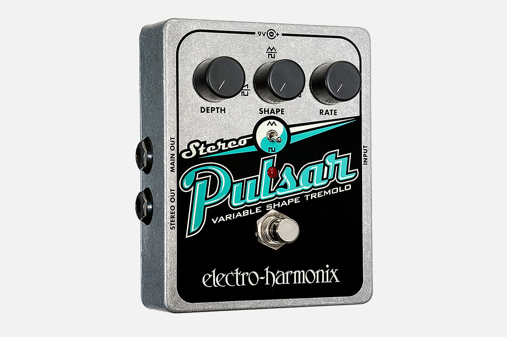

12. Sun's Coming Up
Témájában valószínűleg a legnyomasztóbb szám az albumon. Azok az érzelmek, amiket képes átadni ez a szám, csak úgy élhetők át, ha egyszer elmélyedve végighallgatjuk.
A Kevin könnyek szélén álló, az album többi számához képest mély, meghitt éneklése, a fájdalmas zongora, a környezet ambianciája, a gitár szóló- mind egy mélyen emocionális számot alkotnak. A címe nem túl árulkodó, „Nap felkel”. Parker már korábban is írt a napról, és szerette korai számaiban említeni a természetet és az univerzumot. Egyszerűen van valami megmagyarázhatatlanul poignáns, de egyben ominózus életérzés maga cím mögött. A dal persze Kevin apjáról íródott és nagyon személyes, így nem csoda, hogy az album utolsó száma. Emellett élőben először csak a Lonerism 10. évfordulóján volt képes eljátszani.
Személyes témája ellenére mindenki tud belőle meríteni, hasonlóságot lelni benne a saját életére. Átadja azt a magányosságot, elveszettséget, melyet egy ember érez egy általa szerettet személy elvesztése után.
Az album énjének szemszögéből ez volt a legeslegutolsó csepp a pohárban. Elvesztette utolsó bizalmasát, teljesen egyedül maradt, lelkileg összetört. Ez egy tökéletes vég a lemeznek, a többi számhoz képest, a sok érzelmi zűrzavar után, itt már nincs túl sok hangszer, az album énje még utoljára, őszintén ki tudja önteni lelki bánatát. Érzelmileg üres lett, az élet nem tud tovább szórakozni vele, apatikussá, közönyössé vált.
A szám egy ¾-es ütemben írt, érzelmes zongorával indul. Hamarosan megjelenik Kevin szokatlanul mély, fájdalmas hangja, amin reverb és echo effect van. Az első versszakban az élet mulandóságán reflektál.

„Mindaz, amiről azt hittem, hogy soha nem múlik el,
Csak a gondolat is, hogy már csak emlékek, megőrjít.”
Tehát minden, amit Kevin természetesnek vett, nem értékelt meg eléggé, az most hirtelen eltűnt, és képtelen feldolgozni, hogy már csak emlékek maradtak. Azaz míg élt apja, nem tűntek fontosnak a vele töltött pillanatok, de miután már csak az emlékek maradtak, rájön, hogy nem becsülte meg eléggé.
Azzal folytatja, hogy látja egy nő, valószínűleg az anyja repülőgépét, ahogy ingadozik a levegőben, majd landol. A repülőgép ingadozása egyfajta metafora lehet az érzelmi bizonytalanságra, amit érez. Valószínűleg rossz hírekkel érkezik az anyja, ezért is mondja a következő sorban, hogy „Ott, az övében, más kezeiben lóg a világom”. Az élete egy limbóban ragadt, minden attól függ, hogy milyen fejleményt kap. Kevin a legrosszabbat várja, viszont a gyász első szakasza a megtagadás- még van benne egy cseppnyi remény, hogy az apja nem halt meg, jó híreket fog kapni.
Itt megjegyezném, hogy Kevin korábban már a „Runway, Houses, City, Clouds”-ban említette a repülést, és ez a két dal így kicsit összekötődik. Itt arról énekelt, hogy elhagyja otthonát és a fáj ez a változás. Ahogy felszáll a gép, realizálódik benne, hogy akiket elhagy, mennyit is jelentenek a számára.
A versszak második felében még utoljára tehetetlenségében bocsánatot kér apjától magában. Nem volt mindig a legfényesebb a kapcsolatuk, de elnézést kér, ha valami rosszat tett valaha is, és ezért az apja esetleg már nem szerette, csalódott lett volna benne. Ha az utóbbi igaz, akkor Kevin azt kéri, hogy halálos ágyán csak úgy gondoljon rá, mint valakire, akit ismert. Tehát arra kéri, ne olyan fia ként emlékezzen rá, mint aki megbántotta, hanem inkább csak úgy, mint egy jött-ment akárkire. Próbálja magát eltávolítani Kevin az apa-fiú kapcsolatból, de legmélyen itt magának próbálja megkönnyíteni a helyzetet. Érzi, hogy az apja valószínűleg úgy sem haragszik rá és a végsőkig szerette, de ez a gondolat csak nehezebbé tenné a veszteséget, így önként megpróbálja magát eltávolítani.
Később írt még egy számot 2020-as albumán apjáról, ami várható volt, mivel ez az album az élet és annak múlásáról szól. A szám a „Posthumous Forgiveness”, magyarul a posztumusz megbocsájtás. Itt nem csak újból bocsánatot kér, hanem apjának is megbocsájt. Mire képes megérteni apját, ő már nem tudja neki megmagyarázni tetteit. Kevin tudta, hogy ha meg akar neki bocsájtani, az egy egyoldalú beszélgetés lesz. Annak ellenére, amit az apja vétett ellene és testvére ellen, mégis hiányzik neki, mesélni szeretne neki életéről, karrierjéről. Ebben a számban egyfajta költői öntudat is megjelenik, Kevin (helyesen) azt gondolja, hogy apja büszke lenne zenei eredményeire.
A versszak végére újra visszatér a szorongással, a fájdalmas várakozással telített valóságba. Azt mondja, ha nem hall egyhamar semmiféle hírt, akkor teljesen „kikapcsol” (ergó mentálisan tönkremegy), megnézi, hogyan fog kisülni. Tehát ha tovább váratják, akkor már feladja, hogy egyáltalán érzelmileg megpróbálja feldolgozni.

A kórusban megváltozik az éneklés dallama, amely eddig kicsit inkább szavalásra hajazott, illetve a zongora is feszültebb lesz. Kevin úgy kezdi, hogy sohasem volt igazán merész, nem egy kalandor ember. Ez egy elég fura sor, talán a legfurább a dalban. Jelentésében valószínűleg arra gondol, hogy nem használta ki a lehetőségeit, hogy apjával legyen, vagy esetleg nem volt elég bátor megmondani neki, mennyire is szereti igazán és már túl késő. Emellett arra is gondolhat, hogy nem használta ki lehetőségeit, nem adta bele mindenét, hogy apját büszkévé tehesse, de erre már nem lesz esély.
Ezt követően felhívja „kedvesét”, azt a lányt, akivel két számmal ezelőtt eléggé tönkre ment a kapcsolata és akit nem is igazán szeret, mind az kiderült a „Keep On Lying”-ból. Persze a lány nem válaszol, és ez csak ront Kevin mentális állapotán. Egyedül maradt, elhagyatottnak érzi magát, nincs kibe támaszkodnia.
A következő sornak nincs sok jelentése: „7 óra van; Doverben éjfél”. Valószínű, hogy csak azért Dover-t használta, mert ez rímelt az „over” -re. De az is elképzelhető, hogy Doverben még éjfél volt, de ő hazajött apjához Perth-be, és itt már 7 óra van.
Mindenesetre az ezt következő sorban azt mondja, hogy a „nap felkelt, hát vége van”. Bár a napfelkelte általában egy pozitív képet fest, itt nem így van. Még nem állt készen, de egy új nap jött el, egy új fejezet nyílt az életében. Nem tud mit csinálni, mint elfogadni és nézni a napfelkeltét, azaz csak engedi, hogy történjenek a dolgok. Valahol legbelül érzi, hogy apja meghalt, ha a hír még nem is jutott el hozzá. A „hát vége van” egyfajta keserű elfogadást mutat, nem tud a sorssal szembe menni.
A kórus második felében arról beszél, hogy apja gitárját játssza, miközben ő haldoklik a rákban. Kevin próbál ragaszkodni ahhoz, amivel kettőjüket összekötötte, ezzel próbálja gyászát könnyíteni. Az apja haldoklik, de ő képtelen feldolgozni ezt és inkább a zenével tereli el a figyelmét, próbál visszaemlékezni a szép pillanatokra, mint mikor gyerek volt és apja gitározott neki. Kevin ezután utoljára még felhívja őt, de választ már nem kap. Felteszi a költői kérdést „Apa, miért nem válaszolsz?”, de ő is tudja a választ. Ezután megismétli, hogy felkel a nap és véget ért minden.
A teljes kórus rész rettenetes bánattal tölti el még a hallgatót is, de amikor utoljára kimondja Kevin, hogy „vége van”, az ember garantáltan libabőrös lesz. Az a mély, nyomós magányosság és az a szenvedő fájdalom, amit átad ez a dal egyszerűen megfoghatatlan. Többször is lehet a dalban hallani, hogy Kevin hangja megreked, és ez keverve a zenei bánattal, feszültséggel, kihozza az emberből az érzelmeket.
Ezután rögtön abbamarad mind Kevin hangja, mind a zongora és vissza sem jönnek, hagyja a szám elgondolkozni a hallgatót. Az ezt követő részt legjobban úgy lehet leírni, mint tiszta, keserű és nosztalgikus búbánat. Megjelenik egy erősen effektelt gitár, mely innentől végig szólózik. Majd Kevin megint előhozza az ambianca eszközét. A szél fúvásának a hangját és lépteket hallunk (ezek a lépések megjelentek a „Be Above It”-ban is, így az album végében és elejében is van hasonlóság). Ezeket a hangokat Kevin a tengerparton sétálva vette fel. Itt gondolhatunk, arra, hogy Kevin próbálja átélni az apjával szerzett emlékeit, próbál nosztalgiázni azáltal, hogy bejárja a kedvenc helyeiket. De már nem ugyanolyan, inkább csak magányos szenvedés az egész. A gitár fájdalmas dallama, annak repetíciója eközben mesterien alátámasztja ezeket az érzelmeket.
Ahogy Kevin közeledik a tengerparthoz, halljuk a hullámokat, a tenger morajlását. A végén már szinte mást nem is lehet, csak is a víz csöndes csapkodását. Körbe van véve annyi mindennel, de egyedül van, már senkije nem maradt. Majd egyszer csak megjelenik egy gyermek és egy felnőtt férfi hangja, ezután a felvételt sietve lekapcsolja, 3 másodperc csönd és vége mind a számnak, mind a lemeznek.
Kevin a kisgyerekben és annak apjában magát és saját apját látta meg. Majd kissé, mint a tenger, az érzelmek és emlékek elárasztották őt. A gyermekkor ártatlansága, az önfeledt, boldog emlékek szembeszállnak a keserves, bús jelennel. Ez a keserédes nosztalgia csodálatos lezárása az albumnak. A végére a magányban ragadt és kilátástalan lett az élete, már csak a múltjában keresheti a boldogságot.
A számban nem sok hangszer van, de egyikük az álomszerű, hullámzó gitár. Ezen a gitáron egy magas rátájú EHX Small Stone phaser, RE-201 space echo, egy erős delay, erős EHX Pulsar  tremolo, illetve egy Boss GT-6  effekt processzor van; ez természetesen mind a szokásos torzitópedálok mellett. A gitár dallama és a gitárszóló eredetileg a „Desire Be, Desire Go” egyik demo- illetve élőben előadott verzióján szólalt meg először, itt újból felhasználta.
effekt processzor van; ez természetesen mind a szokásos torzitópedálok mellett. A gitár dallama és a gitárszóló eredetileg a „Desire Be, Desire Go” egyik demo- illetve élőben előadott verzióján szólalt meg először, itt újból felhasználta.
A dal zongorája mind tempóban mind az akkordmenetben nagyon hasonlít a The Zombies „A Rose for Emily ” zongorájára, ami pedig a The Beatles „Eleanor Rigby” és mégjobban a „For No One ”-ból inspirálódott. Mind három számhoz hasonló, kissé barokk-poppos a zongorajátszás. Ezt lehet lopásnak nézni, de Kevin apja egy óriási Beatles rajongó volt és ez valószínűleg csak egy aranyos utalás- „Nézd apa, én is tudok ilyet!”.
„Eleanor Rigby” és mégjobban a „For No One ”-ból inspirálódott. Mind három számhoz hasonló, kissé barokk-poppos a zongorajátszás. Ezt lehet lopásnak nézni, de Kevin apja egy óriási Beatles rajongó volt és ez valószínűleg csak egy aranyos utalás- „Nézd apa, én is tudok ilyet!”.
Kevin karrierje apja nélkül nem létezne. Amikor kisgyerek volt és apjánál tartózkodott, akkor az ő hangszereivel játszadozott, és Michael Jackson által inspirált dalokat írt már 7 évesen, 11 évesen pedig dobolni kezdett. Apja zenekara gyakran a garázsban levő otthoni stúdióban gyakorolt, majd Kevin 12 évesen saját számait is felvette ott egy kétsávos magnón. Kevin anyja elköltözött, így nem folytathatta a dobolást – ehelyett apja gitározni tanította. Jerry a lead-et, Kevin a ritmus gitárt játszotta. Később az internetről töltötte le gitár tabulatúrákat, kedvenc számait bontotta le és elemezte. Kevin később eltávolodott apjától, tinédzserként vandalizmusba, kisebb bűncselekményekbe, drogokba öntötte dühét. Mindezek ellenére tagadhatatlan, hogy apja befolyása miatt szerette meg, majd kezdte el játszani azt a fajta zenét, amely miatt később híressé vált.
Kevin 2020-ban megosztott Instagram profilján egy számot, melyet apja énekelt és játszott. Jerry hangja szinte ugyanolyan, mint Keviné, mindkettő pedig John Lennon-éra hajaz. Ezt még John Lennon fia, Sean Lennon is megerősítette. Ennek ellenére Kevin szerényen azt mondta, hogy ő sohasem hallotta a hasonlóságot.